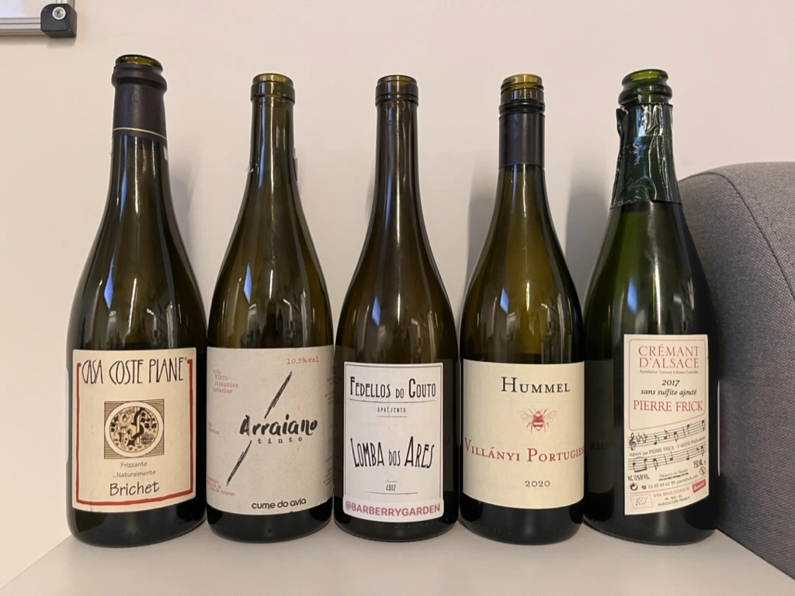
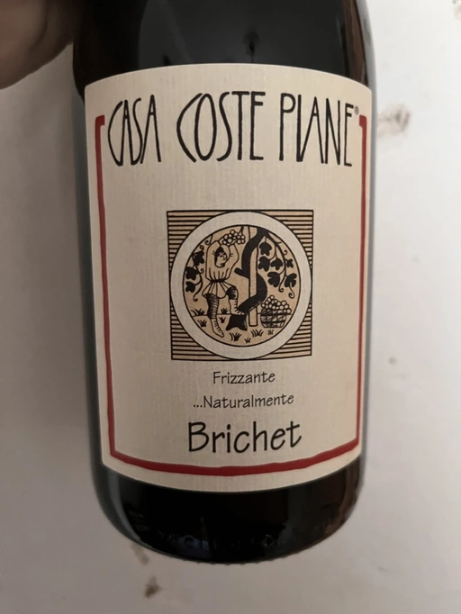
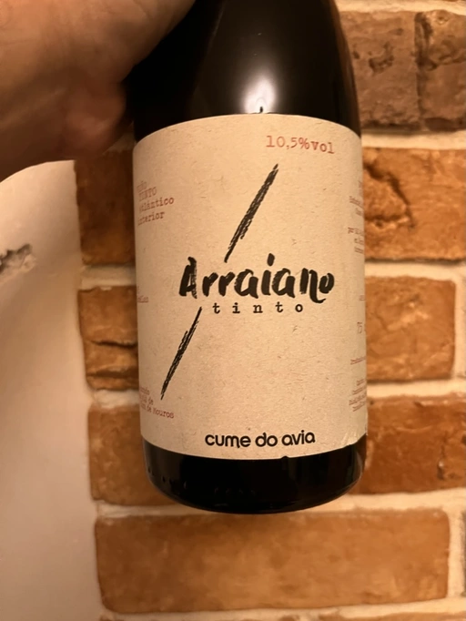
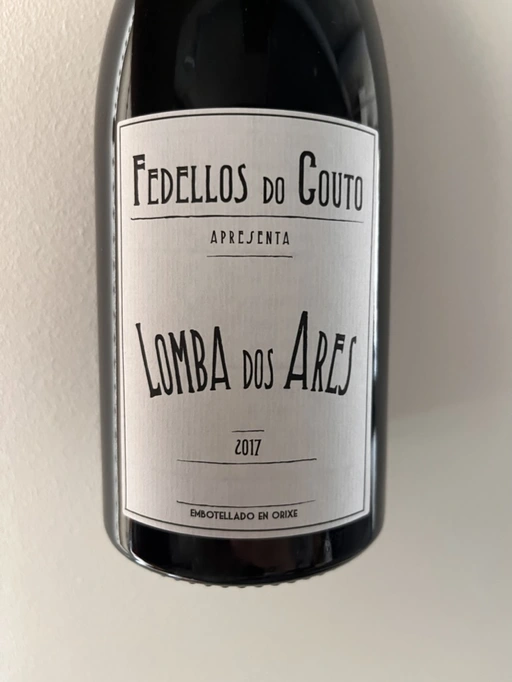
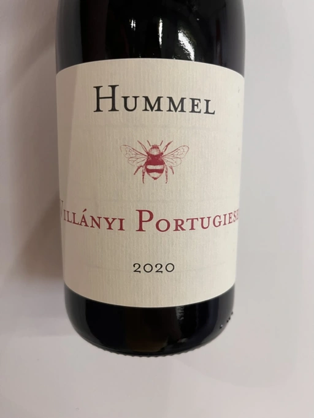
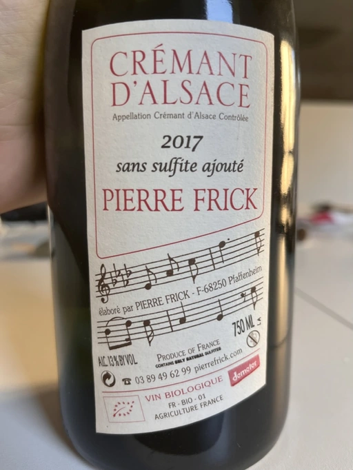

Wine o'clock with People

Imagine a situation. A small party to celebrate independence day (a week after the actual date). Small talks, happiness and all that drive. And then, one person asks me if I am free for wine drinking on Tuesday. Of course, I am; count me in. Yet I didn’t plan to organise any wine tasting events until Monday evening when another person asked for that. Well, it’s only a pleasure.
Since I had a rough idea of how many people will actually come, I prepared 7 wines for this evening to have the freedom to make a final choice depending on the situation. And here are the wines that we tasted.
- Casa Coste Piane Brichet Frizzante …Naturalmente NV
- Cume do Avia Arraiano Tinto 2019
- Fedellos do Couto Lomba dos Ares 2017
- Hummel Villányi Portugieser 2020
- Pierre Frick Cremant d’Alsace 2017
Scores
| Wine #1 | Wine #2 | Wine #3 | Wine #4 | Wine #5 | |
|---|---|---|---|---|---|
| Yulia K | 3.00 | 4.00 | 4.50 | 3.50 | 2.50 |
| Kateryna K | 2.50 | 4.00 | 4.50 | 3.80 | 4.20 |
| Olena M | 2.00 | 3.50 | 4.00 | 3.80 | 3.00 |
| Daria N | 2.00 | 5.00 | 3.00 | 3.50 | 2.00 |
| Karyna S | 3.00 | - | 3.50 | 3.80 | 4.00 |
| Anna Zr | 3.00 | 2.50 | 3.50 | 3.00 | 4.30 |
| Kateryna S | 4.00 | 3.00 | 3.50 | 3.00 | 4.20 |
| Boris B | 3.50 | 3.80 | 4.00 | 3.70 | 4.00 |
| amean | rms | sdev | favourite | price | QPR | |
|---|---|---|---|---|---|---|
| Wine #1 | 2.88 | 2.95 | 0.4219 | 2.00 | 653.00 | 0.7871 |
| Wine #2 | 3.69 | 3.76 | 0.5498 | 4.00 | 616.00 | 2.4542 |
| Wine #3 | 3.81 | 3.84 | 0.2461 | 4.00 | 676.00 | 2.6874 |
| Wine #4 | 3.51 | 3.53 | 0.1011 | 2.00 | 462.00 | 2.5618 |
| Wine #5 | 3.52 | 3.62 | 0.7019 | 4.00 | 754.00 | 1.5973 |
How to read this table:
ameanis arithmetic mean (and not ‘amen’), calculated as sum of all scores divided by count of scores for particular wine. It is more useful thantotal, because on some events some wines are not tasted by all participants.sdevis standard deviation. The bigger this value the more controversial the wine is, meaning that people have different opinions on this one.favouriteis amount of people who marked this wine as favourite of the event.outcastis amount of people who marked this wine as outcast of the event.priceis wine price in UAH.QPRis quality price ratio, calculated in as100 * factorial(rms)/price. The reason behind this totally unprofessional formula is simple. At some point you have to pay more and more to get a little fraction of satisfaction. Factorial used in this formula rewards scores close to the upper bound 120 times more than scores close to the lower bound.
Casa Coste Piane Brichet Frizzante …Naturalmente NV

- producer: Casa Coste Piane
- name: Brichet Frizzante …Naturalmente
- vintage: NV
- grapes: Glera
- appellation: IGP Colli Trevigiani
- location: Veneto, Italy
- alcohol: 11.0
- sugar: ???
- price: 726 UAH
- importer: Roots
You know Prosecco, right? Yup, those flowery and easy bubbles from the north of Italy. The story behind this region success (and fall that comes in hand with success) is fascinating! Though, that’s not our focus today. What’s important for us is that Prosecco has several prestigious sub-zones, including Valdobbiadene, where Casa Coste Piane is located. And imagine! Loris Follador got this farm with 60+ years old vines and winemaking techniques from his father, who in turn got this all from his father. Loris Follador is a lucky guy with a fortunate legacy. Somehow this family ignored all the ‘improvements’ from the 60s, so they don’t meddle much with vines and wines.
Brichet is made of 95% Glera and 5% Verdiso blend that come from a tiny (0.25-hectare) plot of the same name. These are old, steeply terraced vines on white, stony, limestone-y, scrappy soils that lie outside of the Valdobbiaddene DOCG, hence the IGP Colli Trevigiani classification. The plot was acquired in 2008.
They use a pneumatic press to… well, press the grapes. Gently and slowly. The must is partially fermented in the cold cellar. And then the sweet must is separated from the still juice using a paper filter. And then there is a reunion date happening in the winter to get bubbles. There is no disgorgement, so there is sediment in the bottle, making a fine old-fashioned Col Fondo Prosecco. But most importantly, these lees cells add complexity over time.
Cume do Avia Arraiano Tinto 2019

- producer: Cume do Avia
- name: Arraiano Tinto
- vintage: 2019
- grapes: Treixadura, Godello, Torrontés
- appellation: Vino de Mesa
- location: Galicia, Spain
- alcohol: 10.5
- sugar: 1
- price: 649 UAH
- importer: Roots
There are few viticultural regions as dramatic, wild, and diverse as Ribeira Sacra. Being a boundary between the cool, rainy Atlantic coast and Spain’s hot, dry interior, Ribeira Sacra enjoys the best and the worst of the two domains. The main threats to viticulture are the storms that blow in from the Atlantic, bringing plenty of rain and wind; and morning fogs. A paradise for fungus. And yet people grow vines and make wines here. Some locals even practice organic and biodynamic farming. And that’s truly heroic.
Among them are brothers Diego and Álvaro Colarte. Together with their cousins, they made a “completely irrational and unwise decision” to downshift from industrial Vigo to the family’s village. All that awaited them in 2005 was a ruin and a derelict vineyard. Eira dos Mouros land (named after mythological elves who safeguarded local knowledge) was abandoned by their ancestors in 1942! On a hill (a Cume) overlooking river Avia (hence the name of the winery), they restored the barren land by planting thirteen different indigenous grapes on a mosaic of terroirs - granite, grey and red schist, sand, clay, slate.
We put our youth into the project
~ Diego
This project was a genuine test of their determination and strength. On one hand, it was not backed by any family wealth. The quartet had to take out loans to buy all the necessary equipment. On the other hand, they could not rely on the knowledge and experience of other people. “The past of these forgotten grapes has been erased, leaving no one to discuss the ideal practices for them. Much knowledge was discarded with the introduction of chemicals to the vineyards after the second World War and there is no manual or record. We are trying to reinvent and rebuild this lost history,” Diego explained.
In 2008 they planted their first vines, and in 2012 finally made their first wines (or rather “vinification tests”, as Diego calls them). It’s sad and funny at the same time, but prior to this point, none of them had any winemaking experience.
In 2015, they began to find more enological stability and a clear direction in the cellar. After a decade of struggles, their doubt began to lift. Only to face yet another challenge in the form of mildew plague that is common in this humid region. It wiped out nearly their entire 2016 vintage with leftovers of morale. Just imagine this situation! They were on the brink of financial ruin, exhausted and almost broken.
Yet the next year was a blessing and inspiration. The tribe managed to craft wines that tasted like their dreams. And they were well received by the market. A happy point in their story full of challenges and doubts.
Fedellos do Couto Lomba dos Ares 2017

- producer: Fedellos do Couto
- name: Lomba dos Ares
- vintage: 2017
- grapes: Mencía, Mouratón, Garnacha Tintorera, Caiño, Bastardo
- appellation: Vino de Mesa
- location: Galicia, Spain
- alcohol: 12.5
- sugar: 1
- price: 1100 UAH (???, 676 UAH)
- importer: Wine Bureau
Ribeira Sacra is currently one of the most talked-about places in the wine world, not only for its scenery but for affordable, refreshing, and complex wines made from indigenous varieties like Mencía (a sleeker expression than in Bierzo), Mourantón, Garnacha Tintorera (widely planted after phylloxera), Caño, Bastardo (a.k.a. Trousseau), Grao Negro, Sousón, Godello, Doña Blanca, Palomino, and other grapes. Not the most popular and known bunch, isn’t it?
Luis Taboada comes from an old family that owned Pazo do Couto, an ancient manor dating to the 12th century that produced a wide array of agricultural products. Recognizing the value of his ancient, north- and east-facing vineyards, he teamed up with viticulturist Pablo Soldavini, a proponent of organic farming and winemakers Curro Bareño and Jesús Olivares to found Fedellos do Couto in 2011. According to PanLex, Fedellos roughly translates as ‘brats’. So the name of the winery is - Brats from Couto (estate).
Curro Bareño and Jesús Olivares are also known for Ca’ di Mat and Peixes. After parting (when?) their ways with Luis Taboada leaving DO Ribeira Sacra (deemed atypical!), they decided to merge Fedellos do Couto with Peixes to become a single project - Fedellos.
Lomba dos Ares is a village wine from their oldest and steepest vineyards on the west bank of the Bibei river. Practically a field blend from ~70 years old vines. These grapes are grown on granite, schist, and sand soils. The altitude is 450–650 meters. Lomba dos Ares in a natural yeast co-fermentation of all used varieties aged in foudre and a few neutral 300-500L French oak barrels.
Hummel Villányi Portugieser 2020

- producer: Hummel
- name: Villányi Portugieser
- vintage: 2020
- grapes: Blauer Portugieser
- appellation: Villány DHC
- location: Villány, Hungary
- alcohol: 13.5
- sugar: 1.4
- price: 475 UAH
- importer: Sabotage (Wine Bureau)
Horst Hummel was born near Stuttgart. His family is a Schwabian/Hungarian mix. His great-grandfather was a winemaker in the Austro-Hungarian empire. In 1997 Horst visited Hungary, mostly to get a sense of his family origins. Passionate about wine, he wanted to visit the best winemaking regions during that trip. And so he came to Villány (southern Hungary). And he fell in love with the climate and wine culture. Horst casually asked his hosts about the price for vineyards. And just within days, he became a happy owner of a plot in Villány. By 1998 Hummel winery was up and running. Today Horst lives in Berlin but often commutes back and force between his home and Villány.
Weingut Hummel practices organic farming since 2008 and follows biodynamic principles since 2016. On the 7.5 ha vineyards, they grow Kékfrankos, Portugieser, Merlot, Cabernet Franc, Cabernet Sauvignon, Furmint, Traminer, and Hárslevelű.
Pierre Frick Cremant d’Alsace 2017

- producer: Pierre Frick
- name: Cremant d’Alsace
- vintage: 2017
- grapes: Pinot Blanc, Pinot Gris
- appellation: Crémant d’Alsace AOC
- location: Alsace, France
- alcohol: 13.0
- sugar: 1
- price: 754 UAH
- importer: Wine Bureau
At this point, I propose to avoid obvious jokes about the winemaker’s family name. Even though they are fitting. Look, Pierre Frick is a winemaker in the twelfth generation. He looks over 12 ha of vineyards split into plots: Bergweingarten, Bihl, Rot Murlé, Strangenberg, Steinert, Vorbourg and Eichberg.
The estate farms organically since 1970 and biodynamically since 1981. Only indigenous yeasts, no fining, no filtering, no correction and no other mumbo jumbo. They just let the wines develop their own “lively, healthy and authentic character”.
Conclusion
Despite hasty preparations and all the uncertainty, this event was good. And while it has the lowest average rating among other events of this year (only 3.54), three wines got into the top 20 best-valued wines (compared to wines from other events we organised this year). I am glad that my experiment with two Galician wines played well. And it makes me happy that participants appreciated Fedellos do Couto and Cume do Avia.
And traditionally, the person who guessed the most during blind tasting received a small present. This time it was Cork Dork by Bianca Bosker (UA edition), an inspiring (and sometimes frightening) story about love for wine.
But most importantly, I am happy to see new faces and all this interest in the wine world. All the questions asked, all the excitement and disappointment, and all these emotions we had. It all matters and inspires.
Safe travels, and see you soon! Thanks for reading.
Resources
- https://www.europeancellars.com
- https://www.bowlerwine.com
- https://www.indigowine.com
- https://www.casacostepiane.it
- https://thesourceimports.com
- https://wanderlustwine.co.uk
- https://www.rawwine.com
- https://www.pierrefrick.com
- https://www.weingut-hummel.com (and tech sheets)
- https://www.palinkerie.com/